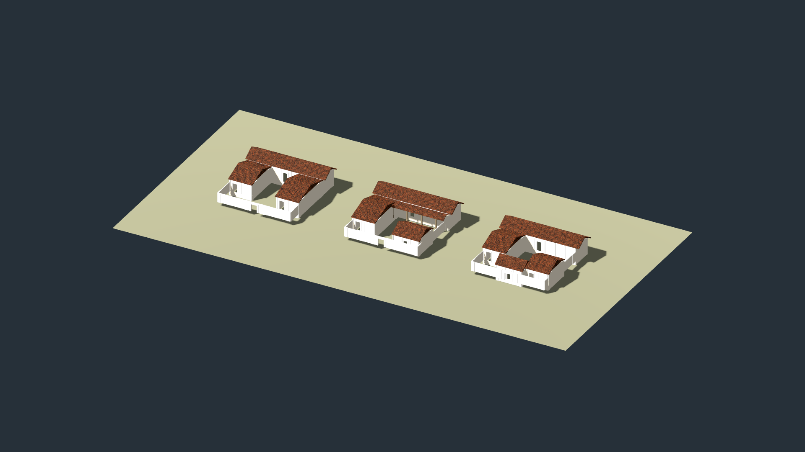

Six matched campaign views and a 120-frame camera path per mode are captured. Isolated, opt-in prototype; manual acceptance is pending. Low-angle ground-contact appearance, roof texture aliasing, sparse inherited layout and proxy transitions still need review. This is a feasibility result, not approval for rollout.
Architecture, historical limits, sources and verification report · Asset provenance and license · Baseline camera transforms and measurements · Candidate measurements, if captured
Only plain CC0 Kenney components are adapted into three courtyard-house assemblies. The finished fantasy/medieval houses are excluded. These are comparative Greek archetypes, not an archaeological reconstruction of Neapolis in 278 BCE. Terrain, vegetation, geographic coordinates, political ownership and other settlements are preserved.
Launch the campaign with --neapolis-residential-trial for the candidate; omit it for the existing buildings. The prototype uses the existing deterministic population placement and MultiMesh renderer. Click an image for its full-resolution file. Use the button to stack each pair at full page width.
This resource-inspection image uses the lightweight Compatibility renderer on a neutral inspection floor. It demonstrates the baked geometry and revised plaster material; it is not a campaign-map screenshot or evidence of campaign performance.

The same 120 camera transforms were used for baseline and candidate, zooming from 36 to 0.8 km while rotating and lowering pitch. Seven sampled frames are shown here; this is a contact sheet, not a smooth playback or an FPS demonstration. Full movement measurements · Verified cameras, image differences and performance comparison
Check courtyard and roof silhouettes, wall thickness, terrain contact, visible texture scale, material consistency, settlement-label legibility, low-angle appearance, the 3 km near/far transition and the 30 km proxy transition. A mesh count or passing ownership test cannot establish those qualities. The full settlement still uses schematic enlarged footprints and retains its existing layout and lack of authored street fabric.
Performance figures are short, uncapped hidden-window samples, with GPU and CPU diagnostics separate. They do not establish sustained interactive frame rates. Both movement modes exhibit substantial streaming hitches under memory pressure. The initial full-map candidate attempt exhausted available memory during existing raster initialization; the eventual successful capture is retained with those limitations.